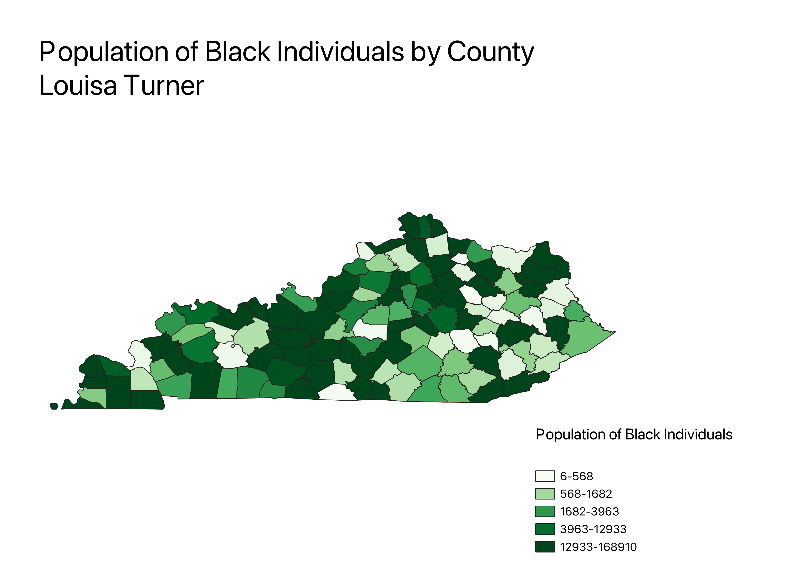

Homework 6: Census data choropleth
Louisa Turner
As we can see by this cloropleth map of Kentucky, the legend indicates the density of Black or African Americans within Kentucky counties. There seems to be a large number of darker colors within the middle and North of the state, indicating a higher number of Blacks live in these counties.

Data used for this project
CSV dataset
Link to geojson